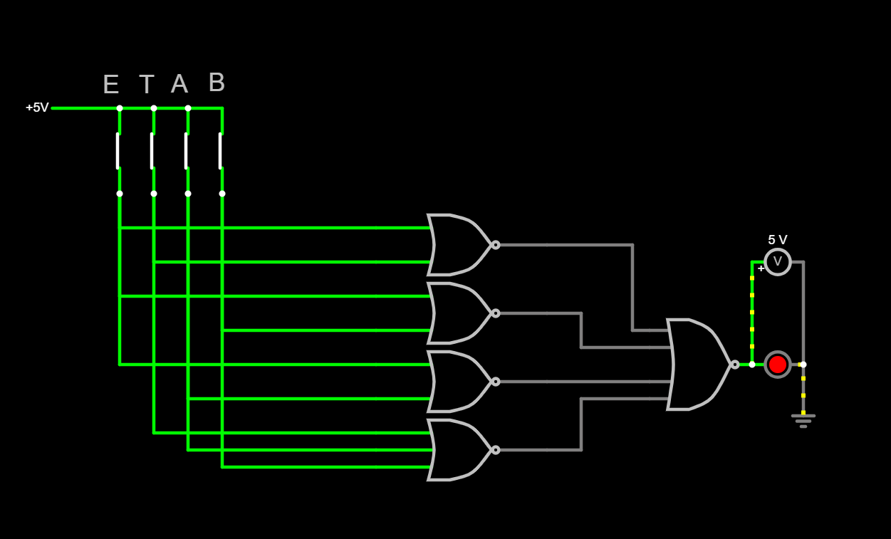

11. Osztály - 2. Félév
-

Porgramozás alapjai - Egy számítógép ellen játszható kő, papír, olló pythonban írt kódja
Önreflexió
- Megtanultam a Python nyelv alapjait (változók, feltételek, ciklusok)
- A kő, papír, olló játék elkészítése segített megérteni a programok működését és a felhasználói interakció kezelését.
-

Digitális áramkörök - Logikai kapuk Falstadban
Önreflexió
- Logikai kapuk és alapvető áramkörök megértése
- Egyszerű kapcsolások tervezése és elemzése